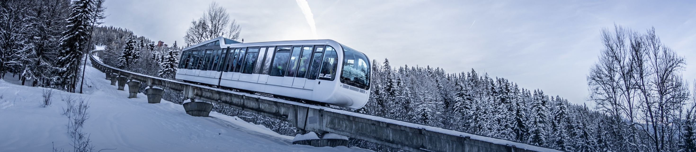
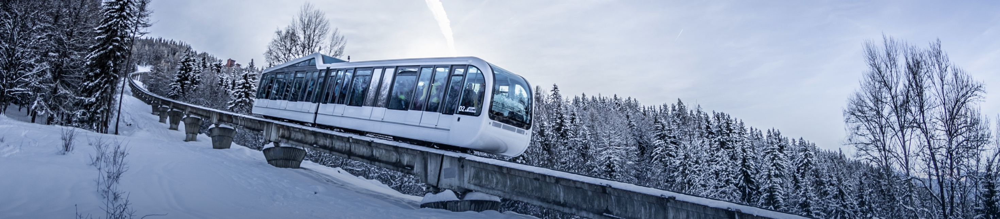

Les Arcs est une station de ski alpine en France.
Les Arcs contiennent 6 domaines skiables différents sur plus de 425 km de pistes et plus de 40 télésièges.
Vous êtes à la recherche de la station qui vous correspond le mieux pour votre séjour
de ski en Savoie ? Ne cherchez plus, vous l’avez trouvé ! Les Arcs est LA station de
ski en Savoie de référence.
Logée au cœur des Alpes, face au Mont-Blanc, la station de ski de Savoie des Arcs regroupe 5
sites situés à des altitudes différentes : Arc 2000, Arc 1950, Arc 1800, Arc 1600, Bourg-
Saint-Maurice. Ces villages vous accueillent toute l’année pour vous faire vivre une expérience
unique en plein cœur de cette station de ski en Savoie.
Pour offrir à chacun le confort, les services et le mode de vie qui lui correspondent, Les
Arcs, station de ski de Savoie, vous propose 5 ambiances différentes au sein des 5 sites
d’altitudes : sensations fortes, loisirs, émotions, plaisirs en famille…à vous de choisir !
 

Située en Savoie, au nord du Parc National de la Vanoise, la station de ski des Arcs, au-dessus de Bourg Saint-Maurice, est née à la fin des années 1960. Depuis, de 810 à 3800 mètres d'altitude, Bourg-Saint-Maurice, Arc 1600, Arc 1800, Arc 1950 et Arc 2000 vous accueillent été comme hiver. Au programme : ski, surf, raquettes, air pur, grands espaces, sérénité, liberté retrouvée !

La station des Arcs dans les Alpes se distingue de ses homologues par son histoire atypique. Sa création (fin des années 60) s'est révélée comme une vraie aventure de visionnaires passionnés. Un promoteur, des élus, des architectes et ingénieurs, des agriculteurs, des sportifs... ont été les «inventeurs» d'un des plus beaux domaines skiables au monde. De nombreuses légendes de la glisse ont vu en cette station de ski des Arcs, un terrain de jeu pour sportifs de tous niveaux épris de liberté...